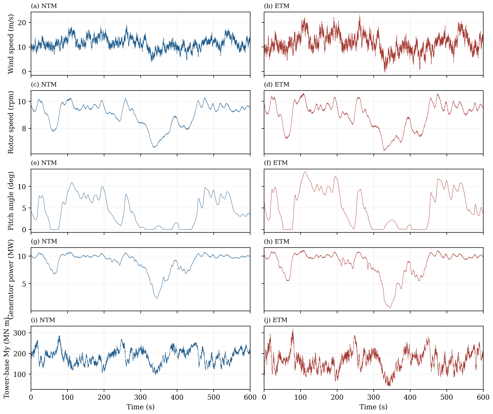
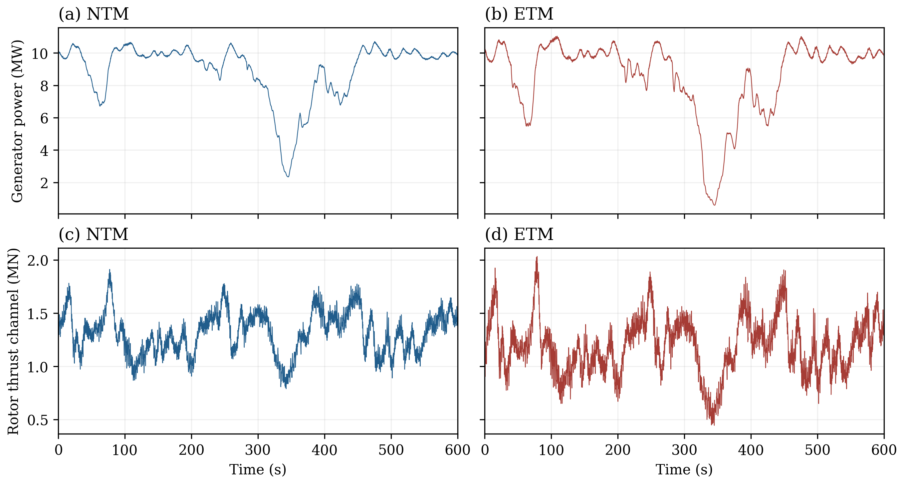
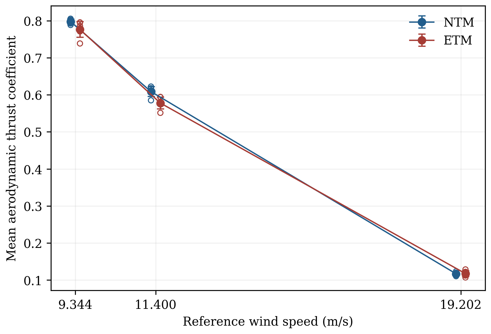
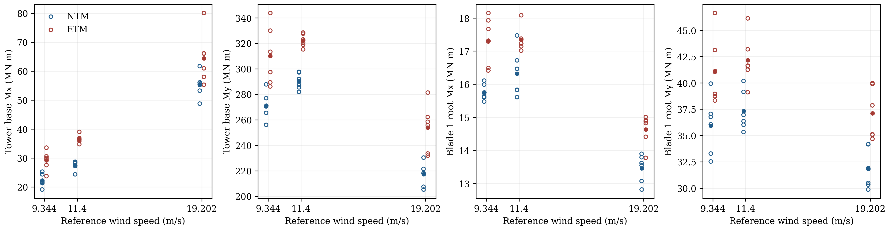

历史36组整机运行与气动系数
原始OUTB SHA-256逐件核验。三风速、NTM/ETM各六seed。额定风速S01时程仅为代表例，100–700 s。与新风场和当前REV22精细混塔分开；旧TwrAero=False，转子推力与塔底/叶根内力不可直接当作独立外力加载。
来源审核 · 36组统计 · NTM时程 · ETM时程 · 复现程序

风速、转速、桨距、功率与塔底弯矩同步时程 · SVG · PDF
发电功率与转子推力通道时程 · SVG · PDF
三风速下气动推力系数统计 · SVG · PDF
塔底及叶根弯矩绝对峰值统计 · SVG · PDF